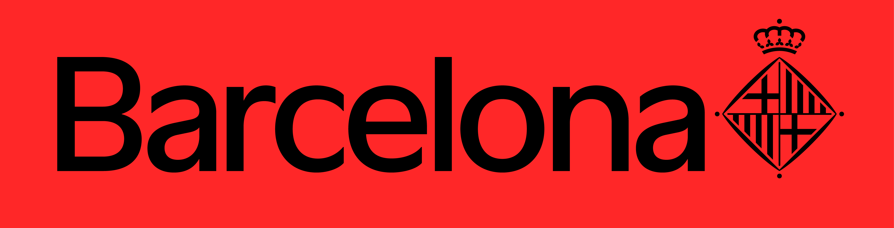
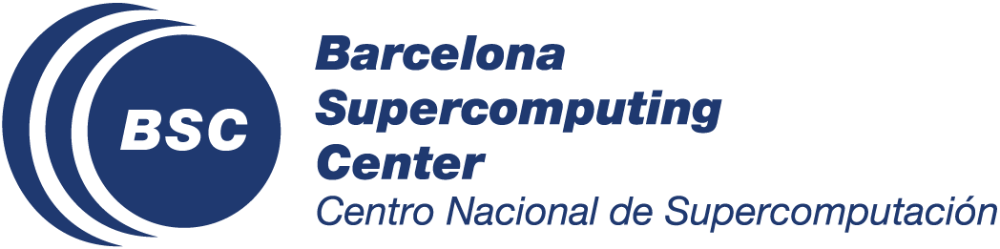
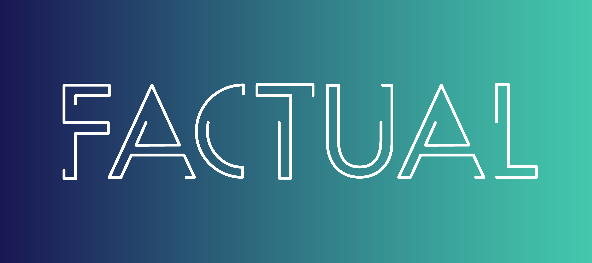

Project Partners & Acknowledgements
The REALLOCATE interactive map is the result of a collaborative effort across multiple organizations. We would like to thank the following teams and individuals for their vital contributions to the project's success.

IMPD
Serving as the core "product owners," IMPD provided the foundational data and continuous feedback to ensure the map meets the project's vision and user needs.

BSC - Data Pre & Post Processing
Provided the underlying technology and initial development. Special thanks to Paula Benito for creating the foundational map template, and Luca Liebscht for spearheading the initial build.

FACTUAL
Drove the continuous development and refinement of the interactive dashboard, taking over the project's technical evolution after Luca Liebscht joined the team.